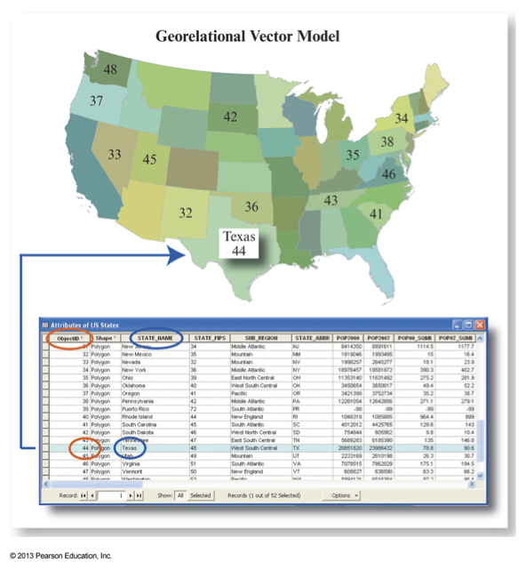
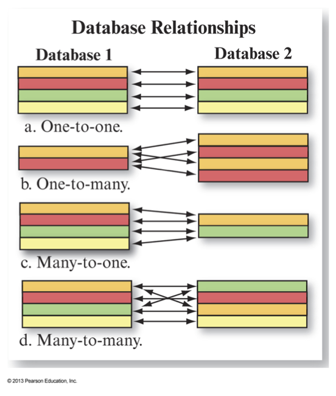
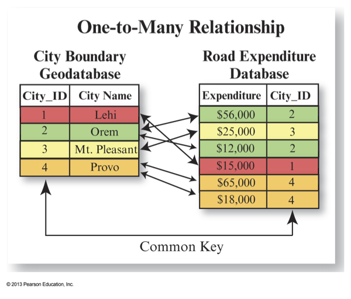
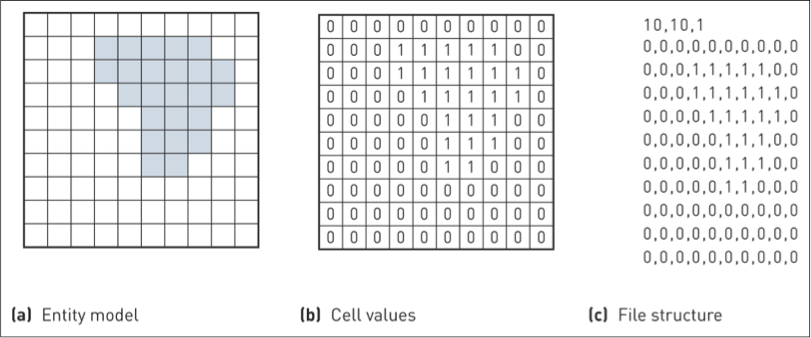
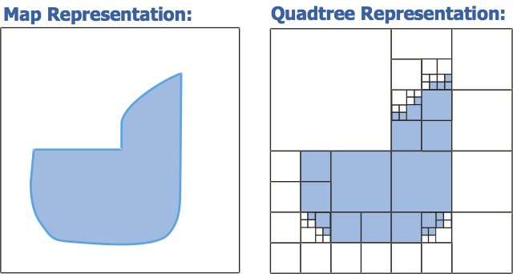
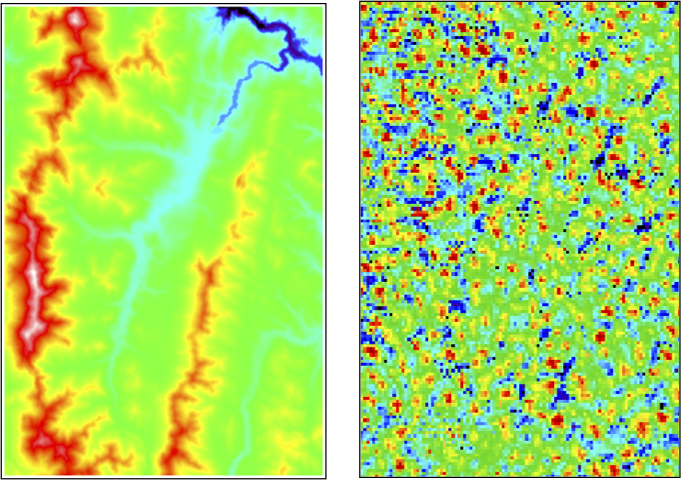

GEOG*3480
GIS and Spatial Analysis
Geospatial Data
Part 2: Spatial Data Structures
John Lindsay
Fall 2015
Spatial Data Structures
- The spatial data models (i.e. raster vs vector) only exist as conceptual constructs of the
way that we model and interact with geographic entities.
- A spatial data structure refers to the way data stored on a computer are organized.
- There are many different organization structures for either vector or raster data.
Desirable properties of a data structure
- Efficiency - databases should be efficient both in terms of storage requirements and speed of use
- Flexibility - it should be easy to perform a wide variety of operations
- Topology - relative spatial relationships should be present implicitly or explicitly in the data structure
Adapted from: D. Peuquet, Cartographica, Vol. 21(4), 1984.
Desirable properties of a data structure
- Completeness - it should include all necessary features and relationships
- Robustness - it should be able to accommodate special situations such as islands or lakes
- Compatibility – it should be easily read by GIS software, or easily convertible to another format
Adapted from: D. Peuquet, Cartographica, Vol. 21(4), 1984.
Georelational Vector Data Structures
- Geometries and attributes stored separately in a split system.
- Geometries are stored in a graphic file and attributes in a relational database.
- Attribute data is linked to map features by the use of a Key or ID
field.
- Each spatial object can have any number of attributes associated with it.
- Vectors can be related to one another through common keys in their attribute tables.

Jensen and Jensen, 2013

Jensen and Jensen, 2013

Jensen and Jensen, 2013
Georelational Vector Data Structures
- Almost all vector data structures are georelational.
- But this only describes the organization of geometry and attribute type data.
- We also need to consider how to structure the geometry data itself.
- One major consideration is whether or not to use a topological data structure.
Shapefiles
- The shapefile is a standard, non-topological data format used in ESRI products (and many others!).
- Geometries stored in .shp files, attributes stored in .dbf files, other data stored
in .shx and .prj files.
- Although originally associated with ArcView, the shapefile emerged in the 1990s as
a ubiquitous vector standard for data transfer and analysis despite its limitations.
- Shapefile treats a point as a pair of x-, y-coordinates, a line as a series
of points, and a polygon as a series of line segments in a loop but no files describe the spatial
relationships between these geometric objects.
Raster Data Structures
- The real beauty of the raster model is the relative simplicity of its data structures.
- All raster data structures are essentially an array of values with metadata used
to indicate the number of rows and columns and the location of the data edges.
- There is no need to store the location of each grid cell!
- There are ASCII (text-based) and binary raster formats.
- Rasters are essentially just image data and the GeoTIFF format has
emerged as the de-facto standard, although not to the same extent as the shapefile.

Source: Heywood et al. 2006
Raster Data Structures
- Notice that each grid cell contains a single attribute.
- The easiest way of storing multi-spec or multi-band data is to
store each attribute in a separate image file.
- There are however 'multi-band' raster data formats (including the GeoTIFF).
Raster Data Compression
- Raster data structures may also incorporate compression schemes to reduce
file storage requirements.
- One of the problems with using the raster data structure is that it results
in very large files for even moderate-sized grids
- Data compression methods are designed to reduce the redundancy in a raster data set.
- Compression methods are either lossless or
lossy.
Raster Data Compression
- Common raster data compression methods include:
- Run-length encoding
- Quadtree structures
- Wavelet compression
Quadtree Raster Representation

Source: GIS: A Management Perspective by S. Aronoff, 1989.
How well could each of the following rasters be compressed?
